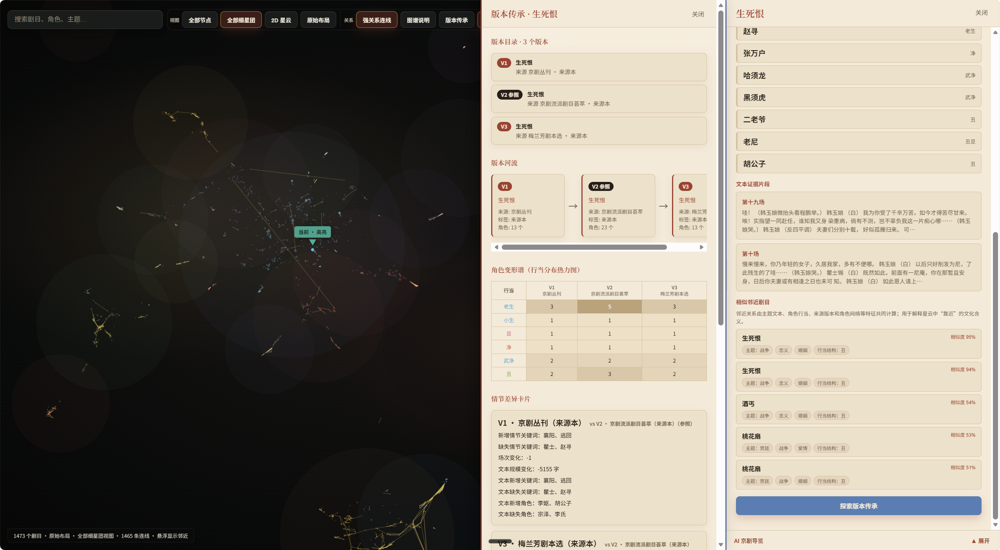
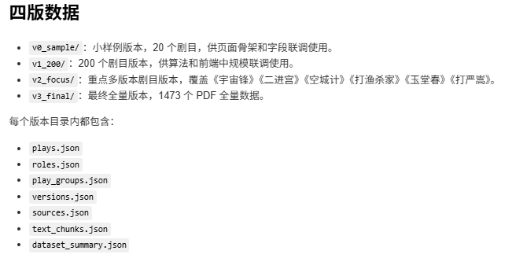
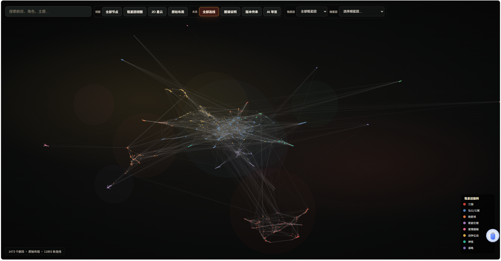
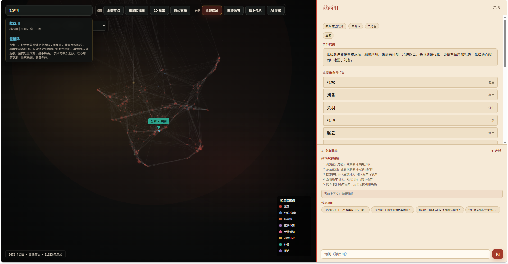
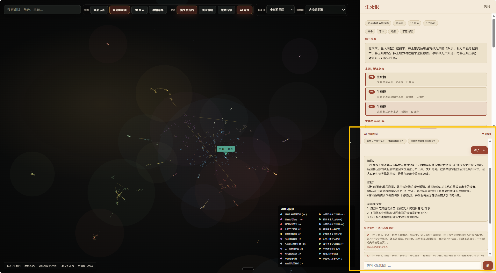

CHINAVIS 2026 · 赛题任务二
戏韵千秋
围绕京剧剧本的版本传承，我们将剧目、角色、来源与原文证据放在同一张图中，方便查看剧目关联和版本变化。
1473剧本版本节点
21可解释的细分星团
252多版本传承关系
5协作角色
01 · 汇报主线
版本传承。
网页先整理原始剧本，再建立剧目关系，并提供交互查询和带引用的问答，展示研究过程与结果。
02 · 技术路线
技术路径。
先统一字段和数据口径，再由各模块并行推进；下面按这条路径说明作品如何成形。
A · 数据工程
统一数据。
将 1473 个 PDF 解析为统一 JSON，整理剧名、角色、来源、版本和文本片段，让算法、前端与 AI 共享同一套数据依据。
原始材料38 个分包，共 1473 个 PDF。
信息抽取提取剧名、角色、来源与正文。
结构化结果剧目、角色、版本与文本片段数据。
查看实现要点
先确定字段，减少模块之间反复调整接口；每段文本都保留来源，方便 AI 回答回到原文。

数据关系将剧目、版本、角色与来源纳入统一索引
B · 算法分析
文化距离。
不只把剧目摆成散点，而是综合主题、角色、来源、关系网络与舞台节奏计算文化距离，再将聚类结果解释为可阅读的星团。
文化距离距离越近，综合特征越相似。
星团解释用代表剧目和关键词说明聚类特征。
版本比较观察角色、情节与来源的变化。
查看算法思路
UMAP 负责安排空间位置，聚类负责发现关联社区，版本关系用于呈现同名剧目的传承变化。

星图总览从整体星云走进具体的文化社区
C · 前端交互
前端探索。
总览、筛选、搜索、详情与版本页共享同一状态；用户可以从全局星云进入一部剧目，再追到它的版本关系。
筛选按星团、来源或角色缩小范围。
详情在同一处查看节点信息与原文证据。
联动图谱、详情面板与 AI 回答同步定位。

探索过程筛选、聚焦、查看详情与跳转自然衔接
D · AI 后端
AI 导览。
后端接收自然语言问题，检索相关剧本片段与元数据，再返回回答、引用依据和可在前端定位的节点。
检索找到相关剧目与原文片段。
回答依据检索结果组织简明回答。
回溯通过引用回到图谱与详情。

AI 导览让回答、证据与图谱节点彼此对应
B · 作品优化
作品优化。
调整星云布局、版本关系、页面节奏与视觉语言，让作品既方便探索，也能在汇报中清楚传达重点。
布局减少遮挡，让星团边界更清晰。
节奏协调首页、详情与版本页的浏览过程。
表达把技术结果转化为便于汇报的叙述。
3D 星云动态呈现剧目之间的空间关系
E · 叙事提交
材料提交。
汇报网页、介绍视频与答卷材料彼此呼应，共同说明作品如何从原始数据走到可探索的体验。
网页说明研究主线与技术路径。
视频呈现完整流程与关键画面。
答卷归纳方法、结果与成员分工。
材料一致
网页、视频与答卷使用同一条叙事主线。
脉络清楚
先交代问题，再展示方法，最后回到作品价值。
便于复核
关键结果都有对应的页面说明、演示画面或文字依据。
03 · 介绍视频
介绍视频。
视频沿着技术路线展开，带评委从整体星云进入版本比较，再看到 AI 如何依据原文作答。
从星云总览建立剧目之间的关联感。
进入版本关系，比较同名剧目的差异。
借助 AI 导览，把问题带回具体文本证据。
04 · 小组分工
成员分工。
以下内容以《小组成员贡献表_已填写》为准。
05 · 价值收束
作品价值。
作品将分散的剧本整理为文化星云。评委可以查看剧目关联、比较版本差异，并根据引用回到原文证据。